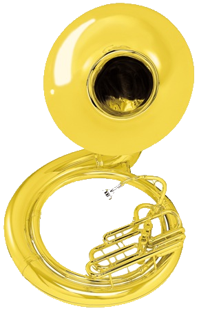

Սուսաֆոն
Սուսաֆոնը փողային գործիք է:
 Սուսաֆոն ը բասով հնչող փողային գործիք է, շեփորի տեսակներից մեկը: Նախատեսված է երաժշտի մարմնի վրա «սայթաքել» և ձախ ուսին հենվել ՝ դյուրին դարձնելով նվագելը շարժվելիս: Այն իր անվանումը ստացել է ի պատիվ ամերիկացի նվագախմբի և կոմպոզիտոր Ջոն Ֆիլիպ Սուսայի (1854-1932), որը հանրահռչակեց այն և ներկայացրեց փողային նվագախմբին:
Այն ժամանակ ԱՄՆ ծովային հետեւակայինների նվագախմբում օգտագործված ուղղաթիռը չէր բավարարում , ուներ փոքր զանգ, ուներ ավելի փոքր տրամագիծ, ձայնը հասնում էր ձախ կողմ: Սոուզեն ուզում էր նվագախմբի վերևում վերևում հնչող գործիք ՝ հարուստ, տաք տոնով գործիք: Իսկ 1890 թվականին երաժշտական գործիքներ արտադրող ընկերության հիմնադիր Չարլզ eraերար Քոնը Ջ.ՖՍուսա ի համար սուսաֆոն ստեղծեց:
Ջ.ՖՍուսան, ի հեճուկս տարածված համոզմունքի, նոր գործիք ստեղծեց ոչ այնքան որպես երթային, երթային գործիք, այլ ավելի շուտ որպես համերգային գործիք, որը հարմար էր երաժշտի համար ՝ լի, հարուստ ձայնով: Ձայնը, որը նա փնտրում էր, հասավ գործիքի զանգն ու պարանոցը լայնացնելով և զանգը վեր բարձրացնելով: Այս դիզայնը մնացել է անփոփոխ ավելի քան մեկ դար: Փոխվել է միայն զանգի չափը ՝ 22-ից «26», այն այժմ ստանդարտացված է 26 »(65 սմ) տրամագծով: Սուսաֆոնի քաշը մոտ 10 կիլոգրամ է:
Սուսաֆոնը փականային փողային գործիք է `նույն տիրույթով և մատով, ինչպես շեփորներով: Սուսաֆոնի ձևն այնպիսին է, որ զանգը բարձր է շեփորի գլխից և ուղղված է դեպի առաջ: Փականները տեղակայված են անմիջապես երաժշտի դիմաց, գոտկատեղից մի փոքր վերև, իսկ գործիքի քաշի մեծ մասը հենված է երաժշտի ուսերից մեկի վրա: Վարդակը սովորաբար բաժանվում է գործիքի մնացած մասից `հեշտ տեղափոխման և պահպանման համար: Բացառությամբ արտաքին տեսքի, սուսաֆոնը կառուցվածքային առումով շատ նման է ստանդարտ ուղղահայաց խողովակներին:
Սուսաֆոնների մեծ մասը պատրաստված է սավանի պղնձից կամ փողայինից, գործիքի գույնը սովորաբար դեղին կամ արծաթագույն է, որոշ մասեր զարդարված են ոսկեզօծմամբ, արծաթով, լաքով, ինչպես շատ այլ փողային գործիքներ: Վերջերս որոշ արտադրողներ ապակեթելային սուսաֆոններ են պատրաստել `քաշը և ծախսը նվազեցնելու և ծառայության ժամկետը բարձրացնելու համար: